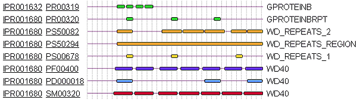

|  Fig 3.13. Typical search output from InterPro, illustrating matches to each of its source databases. PROSITE matches are yellow; PRINTS matches are green; profiles are orange; Pfam matches are dark blue; ProDom matches are light blue; and SMART matches are red. The result shown is for a WD40 repeat protein, GBB5_HUMAN. |